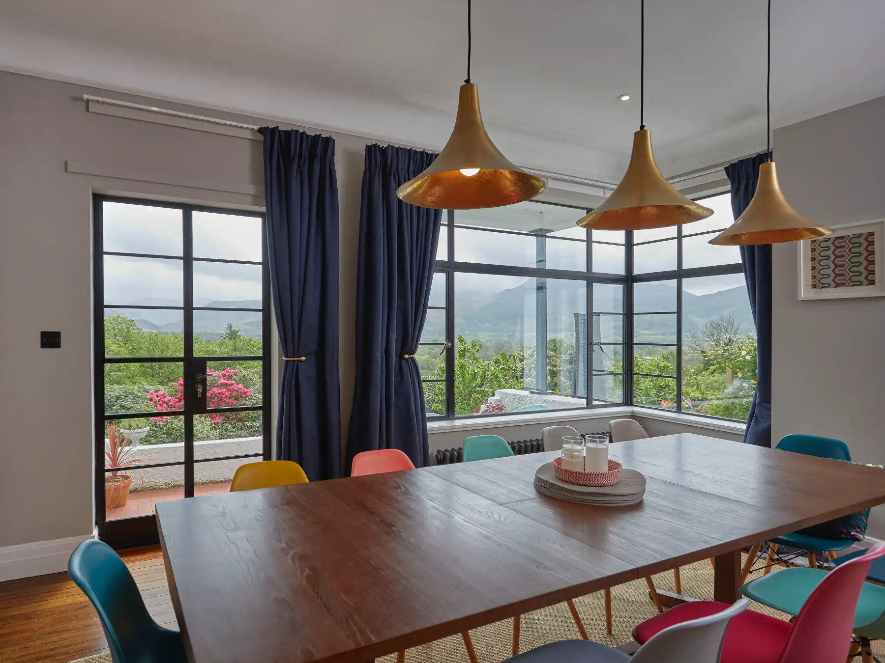
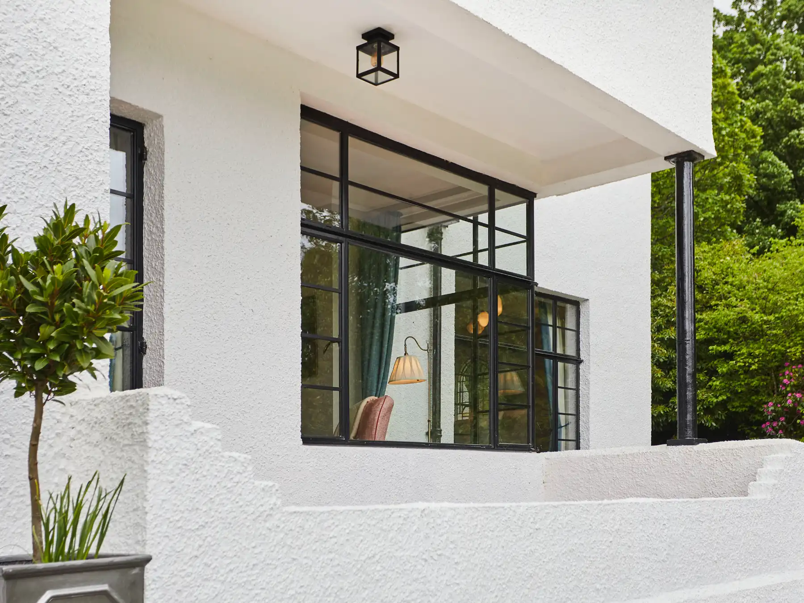
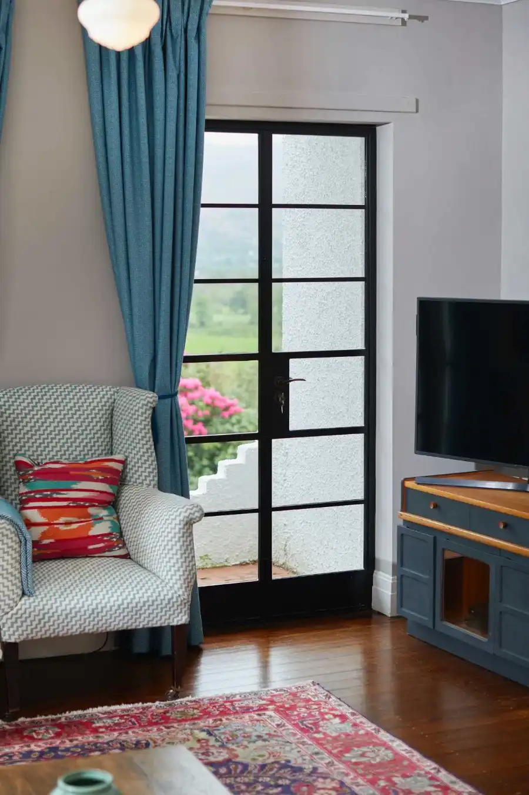
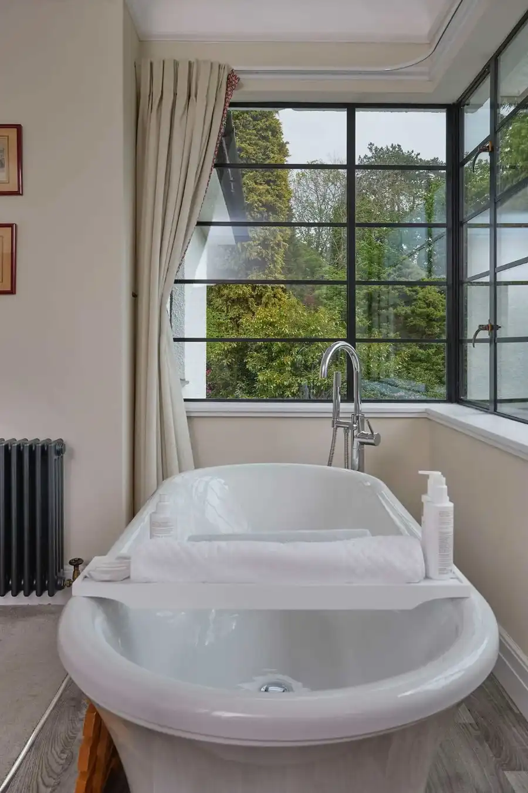
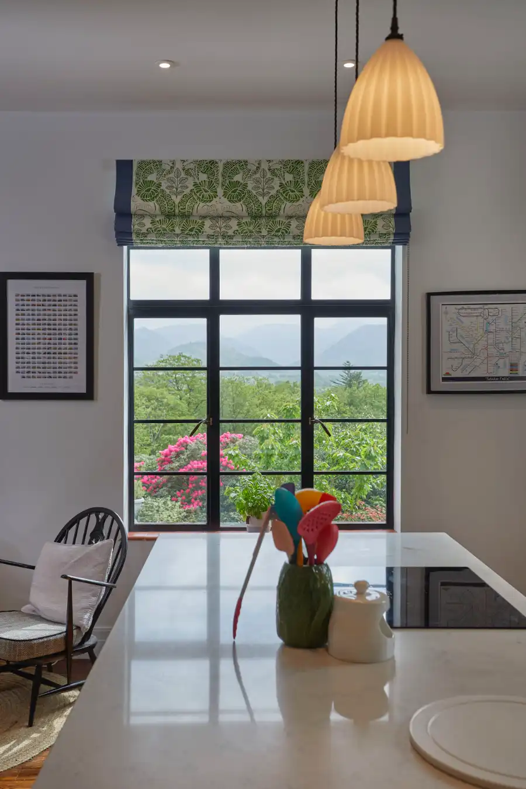

Endymion House, winner of the Crittall House of the Year Winner 2022 award, underwent a carefully considered restoration to preserve its Art Deco character. Working closely with the owners, we supplied and installed Crittall external doors and windows, combining authentic detailing with the benefits of modern double glazing.

We restored the elegance of this Art Deco property with the installation of Crittall doors and windows throughout. The project carefully preserved the home’s original character while enhancing its appearance, efficiency and long term durability.
The slim glazing bars elegantly frame the stunning Lake District views, enhancing the connection between the property and its surroundings while complementing the home’s architectural character.


